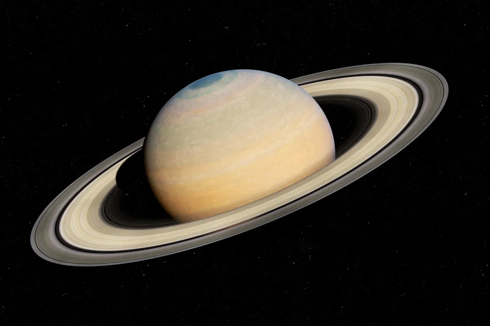

Saturno é o sexto planeta a partir do Sol e o segundo maior do Sistema Solar.

Saturno é o sexto planeta do Sistema Solar e o segundo maior, atrás apenas de Júpiter. É um gigante gasoso com núcleo rochoso e uma espessa camada de hidrogênio e hélio. Possui ventos intensos, tempestades sazonais e vórtices polares. Sua rotação rápida o torna o planeta mais achatado do Sistema Solar e contribui para sua forte magnetosfera, que gera auroras. Sua marca registrada é o complexo sistema de anéis feitos principalmente de gelo. O número de luas confirmadas pode mudar com novas descobertas; Titã é a maior e tem uma atmosfera densa rica em nitrogênio e metano. Foi estudado pelas sondas Cassini e Huygens, que pousou em Titã.

Titã é a maior lua de Saturno e a única lua do Sistema Solar com atmosfera densa, composta principalmente de nitrogênio e com traços de metano. Ela tem lagos e rios de metano e etano líquidos, além de uma superfície gelada e cheia de dunas e montanhas. A atmosfera espessa torna Titã um dos corpos mais parecidos com a Terra em termos de clima, mas extremamente frio.